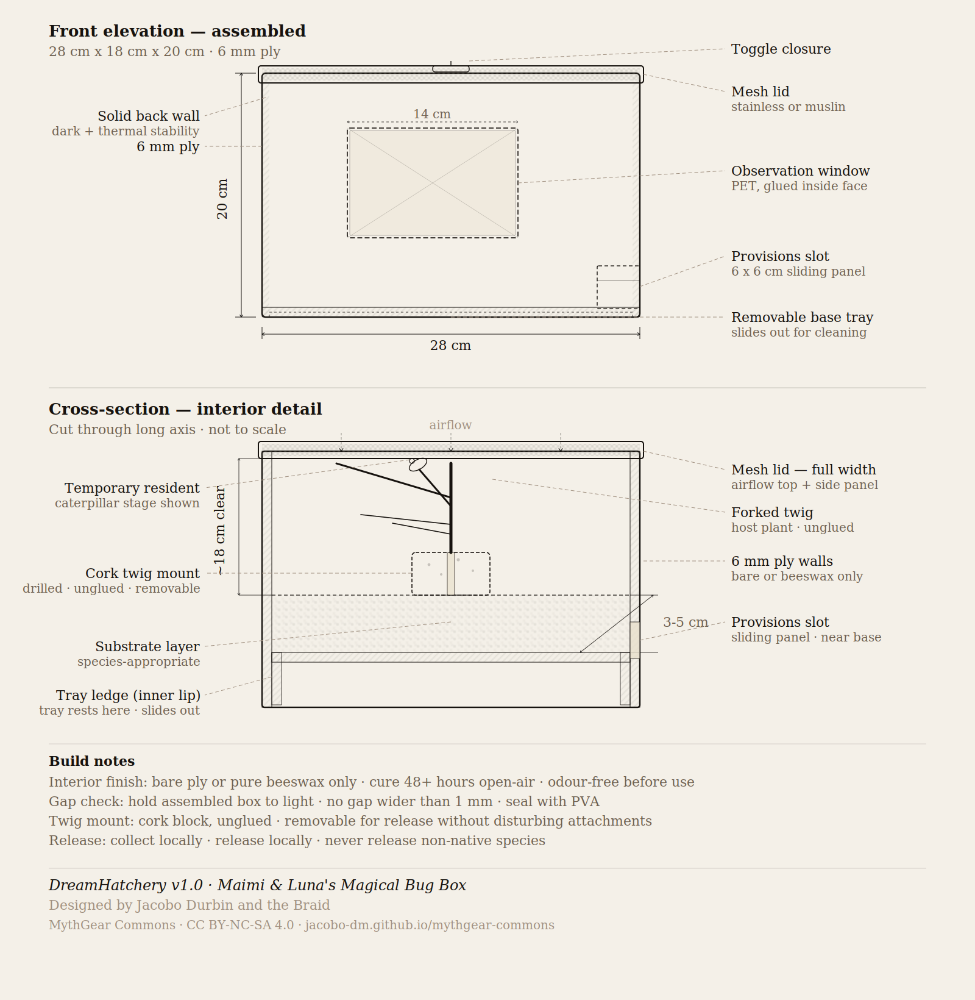

Maimi & Luna's Magical Bug Box — an ethical observation habitat for children. Observe gently. Care carefully. Release healthy bugs.
DreamHatchery is a humane alternative to the ant farm or Sea-Monkeys kit. Children observe insects and small organisms through their life cycles — then release them back into the environment, healthy.
The goal is not collection. The goal is release. That difference changes everything about how a child holds the creature, watches it, and says goodbye.
Clear ventilated lid or dome. Native substrate. Host plant or leaves. Twig or branch for pupation and emergence.
Host leaves or food medium, replenished daily by the child. The act of feeding is part of the practice.
Species cards, a blank journal booklet, one pencil. Observation is a skill; the journal trains it.
Soft brush, magnifier, rubber-tipped tongs. Handle with gentleness — the tools model the ethic.
A single illustrated card explaining when and how to release. The ceremony matters as much as the moment.

A compact, self-contained box — roughly 20 × 15 × 12 cm — that travels safely in a backpack. FSC-certified basswood shell, recycled PET or borosilicate observation window, cork substrate tray, leather toggle closure. It should feel like a keepsake, not a kit.
Individual PortableA larger wheeled observatory — hexagonal or circular, low-rolling — that lives in a corner of the classroom and becomes a center of gravity. Four docking bays accept individual student DreamHatchery units. A wooden rotation wheel on the exterior tracks care responsibility week by week.
Classroom Modular dockingNatural materials throughout: FSC Baltic birch ply, recycled PET or borosilicate glass, stainless steel or muslin mesh ventilation, cork substrate, beeswax or linseed oil finish. Jute cord, leather offcuts, wool felt. Brass or copper hardware that ages gracefully.
The aesthetic should feel like a sanctuary or observatory — not a plastic STEM kit. If it looks like it was made with care, the child will hold it with care.
You kept it safe.
You watched it change.
Now the most important part:
Open the lid. Step back. Wait.
This part belongs to the bug.
Release is not an ending. It is a completion. The class records the date, species, and location in the release log. The child reads from the release card. The creature leaves on its own terms. The child says something — a thank-you, a wish, whatever feels right.
DreamHatchery belongs to the DiscoveryMode educational ecosystem — tools that cultivate attention, stewardship, and wonder through direct engagement with the natural world. It connects to SunHearth's Circle of Warmth inquiry and the broader Fox's Anvil commitment to learning that is embodied, ethical, and complete.
The DreamHatchery is a DiscoveryDome module: a small unit that can live independently on a child's desk or dock into the shared classroom observatory.
{kind=link}